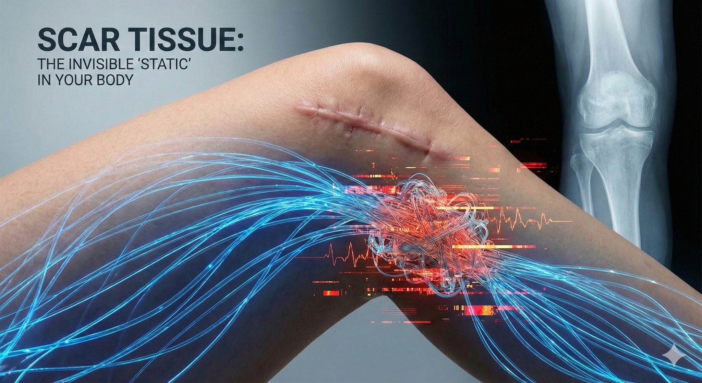

#疤痕 ：那些被遺忘的 1%，往往是身體無法 100% 復原的關鍵
【 #疤痕 ：那些被遺忘的 1%，往往是身體無法 100% 復原的關鍵 】
在現代醫學中，手術的成功通常定義在：「骨頭癒合了、韌帶接上了、傷口閉合了」。
對外科醫師來說，這是 100% 的成功。但對患者來說，這可能只完成了 90%。
剩下的那 10% 去哪了？
為什麼 X 光片看起來完美無瑕，但腰還是覺得緊繃、膝蓋還是覺得陌生？
-
這週診間兩位患者的故事，正好揭露了這個常被忽視的關鍵：「看得見的傷口癒合了，看不見的『訊號』卻斷訊了。」
-
🕸 當皮膚變成了「干擾源」
一位剛拆除腰椎內固定的健身愛好者，跟我形容那種奇怪的感覺：「醫師，我的腰好像不是我的，右邊這裡摸起來像是隔著厚布，轉身時總覺得有一股拉力。」
另一位做過 #前十字韌帶 (ACL) 重建的運動員，困擾則更為隱晦：「力量都練回來了，但膝蓋就是『笨笨的』，做高難度動作時，大腦好像抓不到它的位置。」
這兩位看似毫不相關的案例，其實都指向同一個兇手——那些微小、發白，你看不起眼的「手術疤痕」。
-
📻 雜訊與斷訊：身體的蝴蝶效應
我們常以為疤痕只是皮膚上的一個印記，但在筋膜學與神經學的視角裡，這些被稱為 「 #活性疤痕 (Active Scar)」 的組織，其實是身體裡的「雜訊製造機」。
試著想像一下， #深層沾黏 的 #疤痕 就像是一坨「強力膠」，造成了兩種干擾：
1. #感覺異常 （雜訊）：
腰部手術的朋友，疤痕底下的纖維組織把皮神經死死黏住。訊號傳不過去，大腦收到的就是「麻木、遲鈍」，甚至是錯誤的「緊繃感」。
2. #本體感覺 喪失（斷訊）：
膝蓋手術的運動員，疤痕干擾了筋膜張力的傳導。大腦無法精確讀取膝蓋的角度，導致動作控制出現微小的延遲與誤差。
這就是為什麼練肌力沒用、拉筋也沒用，因為問題不在肌肉的「力量」，而在於神經的「訊號」。
-
🪡 重新調頻：釋放被囚禁的神經
要消除這些雜訊，我們需要的不是強硬的破壞，而是精細的「調頻」。
透過 #肌筋膜乾針 與細膩的 #ScarWork (疤痕鬆解手法)，我們做的事情其實很單純：
在不造成新傷害的前提下，輕柔地撥開那些深層的沾黏，釋放被夾殺的皮神經。
當沾黏鬆開的那一刻，改變是立即的。
腰部的朋友驚訝地發現：「麻木感消失了，感覺總算正常一點了！」
膝蓋受傷的運動員則在落地的那一瞬間驚呼：「哎喲！那種『踏實感』回來了。」
-
🕊 最後一哩路的修復
這讓我想到，很多時候我們面對久治不癒的痠痛或動作瓶頸，往往過度專注在「練更壯」或「放更鬆」，卻忘了回頭看看身上那些沉睡已久的傷痕。
手術的結束，其實是軟組織對話的開始。
如果身上也有這樣「癒合了卻不對勁」的舊傷口，或許它正在等待的，是一次真正的被聽見與被釋放。
#術後修復 #活性疤痕 #ActiveScar #本體感覺 #疤痕治療 #肌筋膜乾針 #ScarWork #十字韌帶 #腰椎手術 #中醫徒手
---
🔎 實證醫學補給站 (References)：
- Bordoni B, et al. (2019). Skin, fascias, and scars. (Cureus). 指出皮膚與筋膜是全身性網絡，局部疤痕足以引發全身性的本體感覺異常。
- Wasserman JB, et al. (2018). The effect of soft tissue mobilization. (J Bodyw Mov Ther). 證實軟組織鬆動術能有效改善術後疤痕的疼痛與沾黏。
- Lewit K, Olsanska S. (2004). Clinical importance of active scars. (JMPT). 經典文獻，證實活性疤痕會產生異常神經訊號，干擾運動控制。
本文案例僅供醫療衛教分享。疤痕治療需經專業醫師評估傷口癒合狀況後方可進行。若有紅腫熱痛感染跡象，請優先回診原手術醫師。
太初中醫診所 東門中醫
中醫師 黃彥鈞
